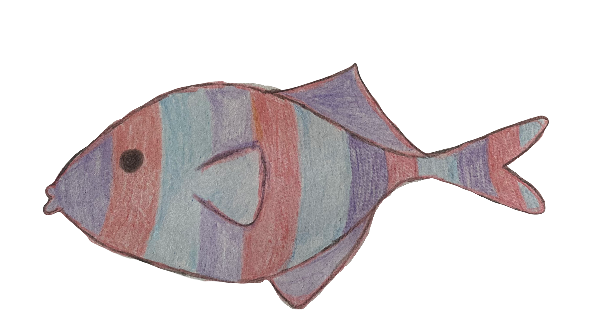
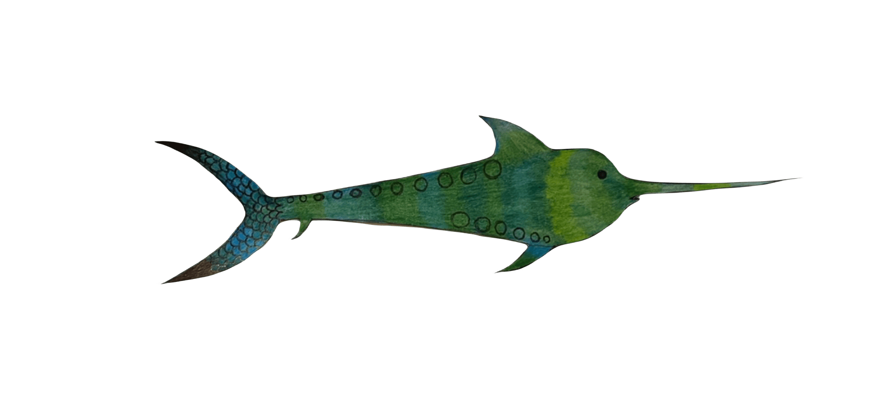
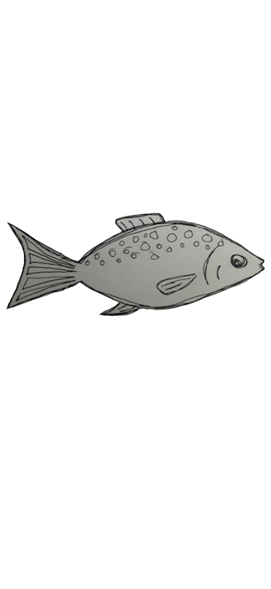
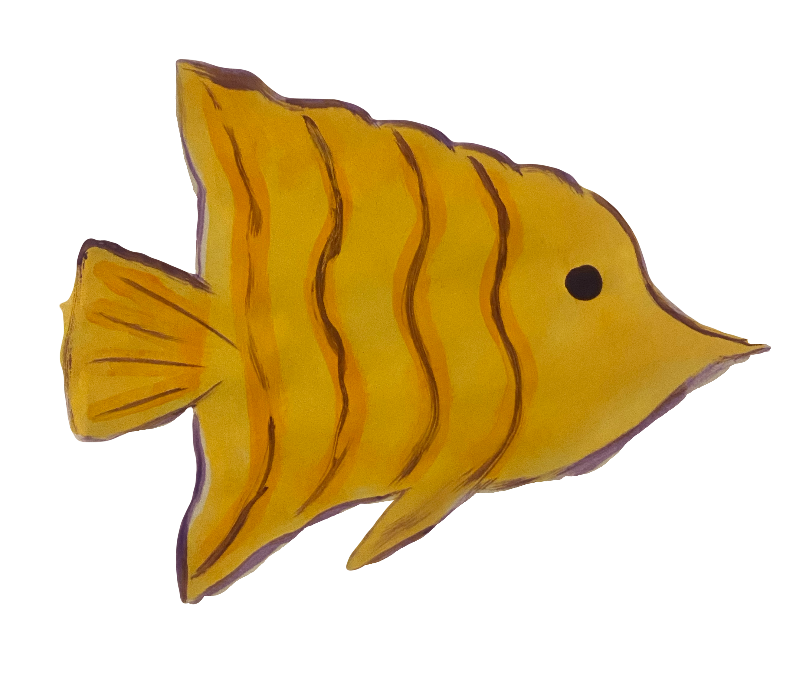
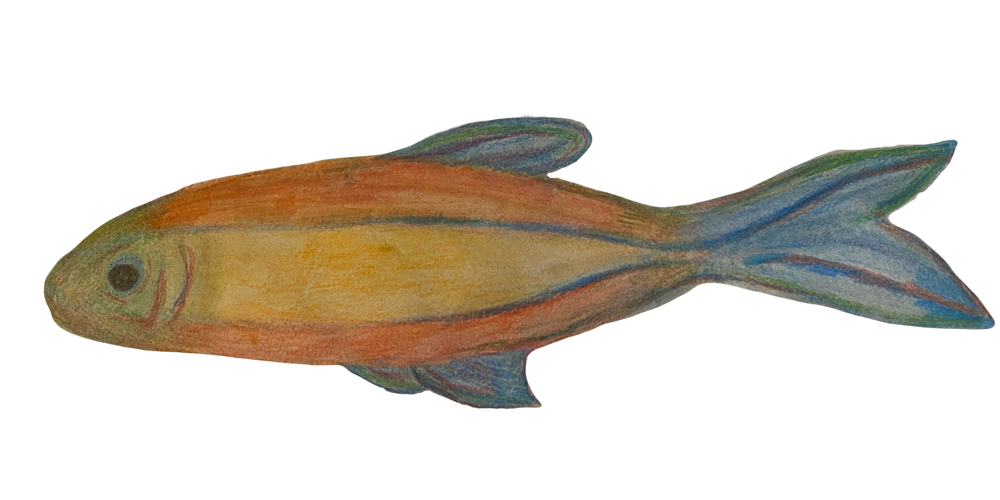
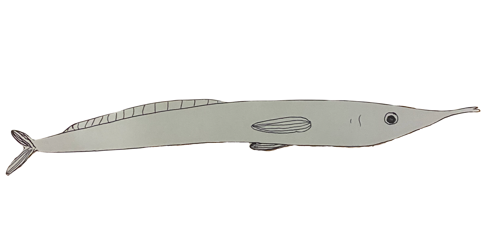
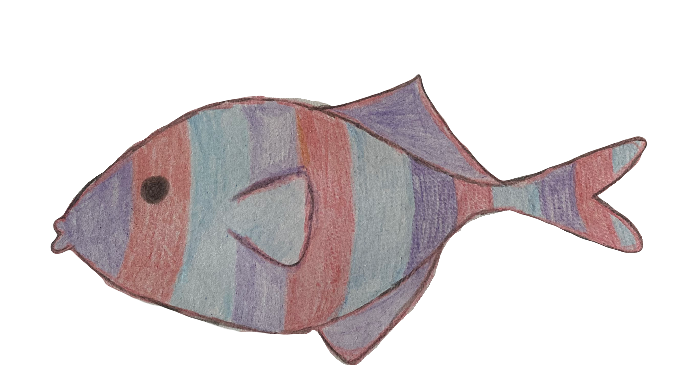
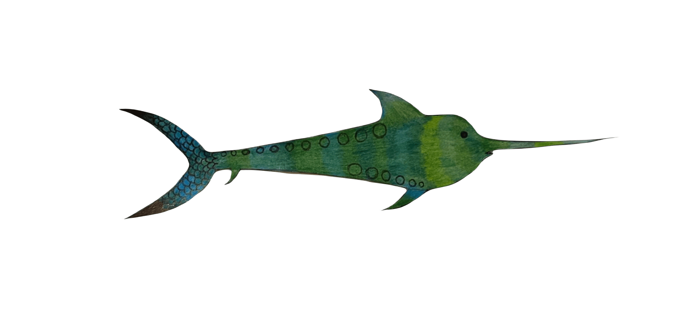
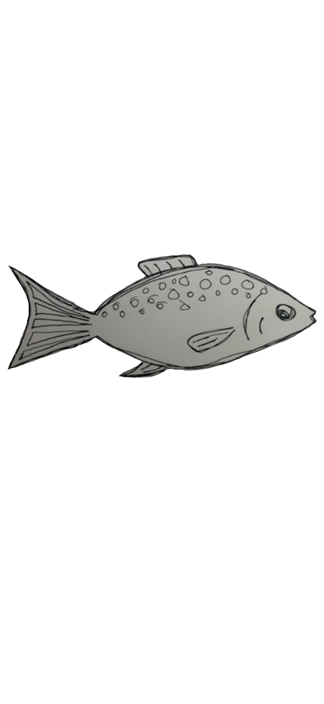
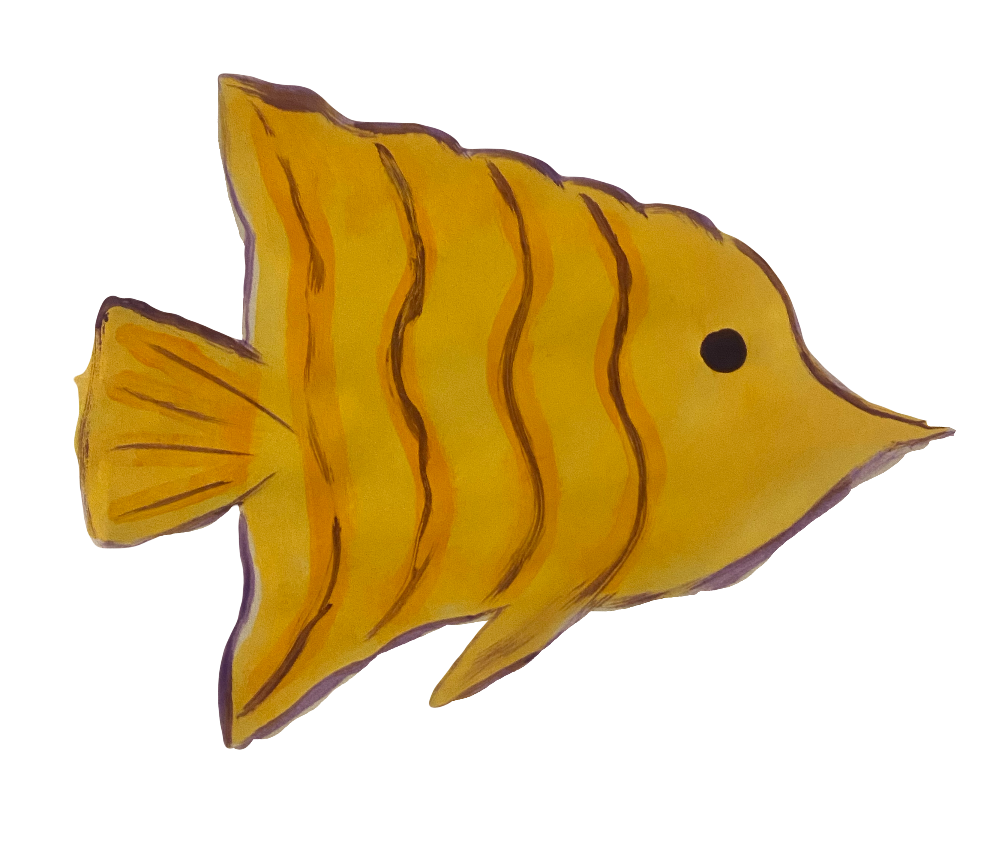
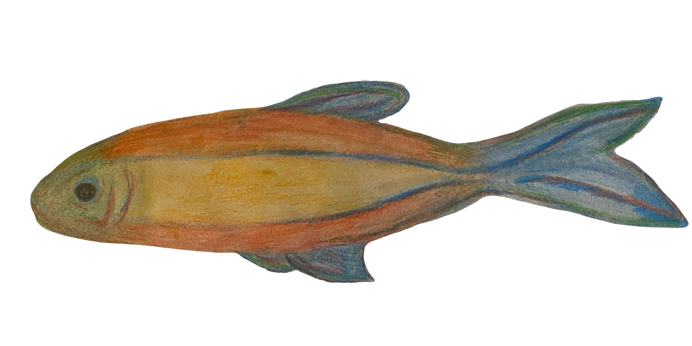
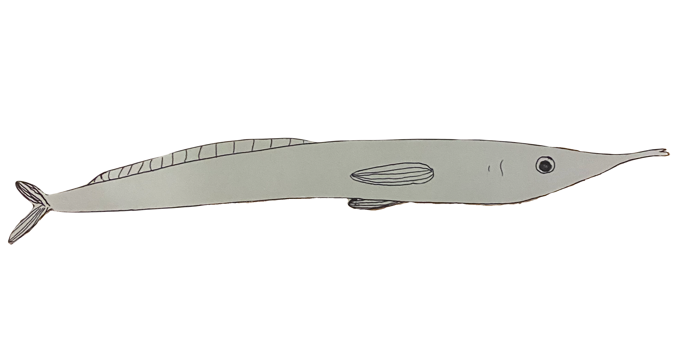
I walk in my new city. Feeling its unfamiliar cracks under my ballet flats. To work I go, a new routine. Strangers make their way with me across the bridge. I think about stopping a beautiful one, eager to have my presence known in this new place. Eager to be the kind of person who stops a stranger at 8:37 in the morning. But I’m scared. I feel unfamiliar. Who am I here? Who am I without my normal running route, without the Sunday farmers market, without the inconvenient train to downtown Los Angeles.
I used to know who I was. Reflections of other people. My sophomore year roommate’s habit of leaving kind notes, my mom’s anger, my high school peer’s love of early 2000s music, my best friend’s tendency towards aquatic motifs. I do that silly voice only because you do. I go to that kind of restaurant only because you do.
But now I’m alone. Trying to figure out what’s left without the mirrors I kept in my pocket. They’re empty now. I reach my hands inside when I’m around these strangers. Searching for a shiny surface that brings out a part of me (of you) I love. I find something small and perform physical comedy for my coworkers. It feels good. But maybe that’s only because I want to tell you about it later. I compliment a necklace and hold the door for someone far behind me. I feel bright, as if I can be me without you. As if what made you, make me, was really me the whole time.
But I return home. To empty walls. Empty because the things that used to make my room mine were that they related to you.
I try to figure out who I am alone. I buy a shirt I would feel embarrassed to wear in front of you. I go on a run without music to pretend to perform catharsis. I smile at one of these strangers. But I wonder what you would think of the shirt, imagine you jogging beside me, and want to notify you of my new-found bravery.
I suppose for now, I must keep performing these acts. Even if they feel foreign. Strange in my body without you next to me. I have to hope my pockets will again have the familiar weight of familiar friendship. That all this new will start to look like myself.
I want to be so open that there’s enough room for someone to fit inside perfectly. I want to move through the world as an empty box, waiting for you to crawl inside. I want to take everything you are and let it fill me up completely.
But before you arrive, I’ll walk around empty. Unsure what’s there, without you, to fill me up.
I want someone to wear my entire essence like a glove. I want to only be functional when you try me on. In the meantime, I’ll sit in the closet. Waiting an eternity for it to get cold enough for you to remember me.
But, I am not a glove. I am a human girl. And so I need to go through my day, limp and lifeless. Finding small gusts of wind to hold me up.
I carry my laptop in a faux-snake-skin purse. A few months ago it lived in the backpack I purchased before my freshman year of college. I switched to the bag in an effort to achieve a more grown-up look after graduating. A hand-me-down from an old friend. I traded in my back pain for a sore shoulder. It made me feel cool. Like I knew where I was going. And that I was used to being asymmetrical.
I hold this bag as I walk to work. It’s fabric wearing off like the falling leaves. I wonder if fellow-commuters can tell I’m new at purse-carrying. That my experience with a bag typically comes with a rounded spine. When I wear the purse on coffee dates and walks along the river, I want to tell my peer that this is new for me. That I’m making an effort to grow up. That, authentically, deep-down, at my core, I am a backpack-wearer. This is surely important for them to know. But I don’t mention it. And as we walk side by side, I move it over to my left shoulder so I don’t block our forming connection. I think I come across as someone who wears a bag. Perhaps my practice is paying off, or perhaps no one cares.
There’s a chill outside. The first Thursday it feels like fall. I had been waiting for the east-coast air to have that familiar smell. One I haven’t encountered in five years. My body feels sad. Am I reminded of lonely days in high school? Of a temperate west-coast January? Of how much has changed so suddenly?
Fall came late this year. Leaves clung to trees until they rotted off in the extreme September heat. Never having the chance to develop reds and oranges. Wilting straight from green to brown. Summer did not want to leave. She hung around so long that it felt like it might be that way forever. It felt like I’ll always have my best friend, a long Friday lunch, and a party to look forward to. So when this Thursday came, I still wasn’t ready to change. It felt like forgetting you and remembering who I am.
I walk home from work. I wonder if fall will ever agree with me. If I’ll be missing forever. I adjust my bag higher up on my arm. I hear my name from across the street. The two syllables ringing over the sound of 5:16 traffic. A new friend has recognized me. As if I am a person to be recognized in this new place. A grown-up kind of person with an uneven walk and a faux-snake-skin purse.
I remember thinking I should write it down. It felt so poetic to be there. To notice. Our collective shape walking together. Me, teetering from side to side, pushing and pulling against the crook of your arm. I’m too excited to move steadily. I gesture with my other hand, it keeps my sentences fluid. I’m afraid if I stop talking it will become too intimate. That we’ll have to comment on our position. That someone else will notice. That you’ll pull away. That we’ll have to break our form. You slow down to keep in time with my awkward gait, a feature of mine I’m chronically insecure about. How my body, despite attempts at mobility and grace, refuses to move with the poise I think I should have. Ghosts of injuries dominate years of ballet training, making my walk something of a morbid creature. This doesn’t seem to bother you. At least not now.
We move clumsily together. As a unit. We’re not used to standing together like this, meandering the tricky corners of a CVS in Midtown. A museum to us. We pick up items that have infinite ties to an impossibly long friendship. “Remember that?"
And obviously I do.
I remember it all.
I’m on the plane traveling West. My first time crossing the Mississippi since I’ve been trying to forget. The last time was with you. A flight the same length, to a different end point, and I’d be in your city. You’d pick me up, I’d sit at your kitchen counter, you’d grab a grape from the fridge, I’d comment on the new couch. We’d go outside, walk, this time with a comfortable distance between us. I’d follow your path. If I wanted to, I’m sure I could remember the winding roads, but I’ve always had you to lead me. So I make turn after unexpected turn, eagerly waiting for you to paint a picture of a version of yourself who lived here. A version I know well from stories, from our first impressions, from spending so much time trying to figure you out.
I’m on the plane reading a suggested book from a mutual friend. A book suggested to me in reference to you. It’s about grief. It’s about death. Death came near to me more times this year than ever before. It makes me want to live like tomorrow I would die. If tomorrow I would die, I would beg the pilot to go North instead of South. If tomorrow I would die, I would want to see the new couch. I tried to live this way with you. Leaving everything out on the table between us in a small cafe after an overnight bus trip. You don’t want this. I’m not sure what you want. I don’t think I feel much like listening. On our last phone call that felt honest, I said I just wanted to be close to you. You said you wanted to be close to me.
I wanted us to be in our shape.
The plane ride is turbulent. I think about what would happen if it crashed. How long would it take for the news to get to you? I’m not sure who would find out first. A handful of friends know where I’m going. No one has my flight number. Perhaps my coworkers would first notice. Somehow they would get a hold of my family. Would they think to contact you? It would take a while for you to find out. I texted you about the flight last night, at a time you should have responded. You didn’t. What would that last text be? Last words you’d hear from me. Notes on a new friend who shared a similar interest to us. The plan lands and I hope you’ve texted me. You haven’t.
I go about my weekend, pretending not to notice we’re in the same time zone. But I can’t help it. It’s all I have to write down.
I have been scared of being my current age since I was young enough to notice time.
I first noticed time when I was in grade school. Life was chunked into segments. Now I am in elementary school. I will soon be in middle school. Then I will be in high school. Time was stationed within specific buildings. The shapes of these buildings helped me understand age. The rooms that bounded second and third grade were smaller than fifth and sixth.
In seventh grade I considered myself to be “halfway.” I inhabited a point equidistant to when I started noticing time, to when this kind of time would be finished. To when time would no longer be fixed to bounded vessels. To when time could no longer be described by its space. I’ll call this location time. I knew where the when would be. While it wasn’t so much of a tangible thought, I could picture these locations “running out.” In elementary school, I knew the high school I would attend. I knew what it looked like. After that, I had nothing to picture.
I feared this new kind of time. I remember a friend’s older sister (older by just one year) turning thirteen. At a new thirteen, she told my mother, when asked about being a teenager (finally), that this age felt good. But noted how some don’t consider thirteen a true teenager. I felt relief upon learning this news. Relief because I had one extra year before this new segment of age. The teenage segment.
I wonder why she mentioned this. Was she impatiently awaiting a learners permit and house parties? Things that didn’t come with being a mere thirteen. Did admitting her youth make her seem more mature in the presence of adults? A sort of rejection of her current adolescence. Was she also scared of becoming a teenager? Scared of location-less time.
At my current age, I think to being thirteen. I think about how it’s the same distance between when I noticed time to when I considered location time to be over. I suppose that halfway point was the age of seventeen. Just before this location time ended.
I recall an earlier memory. I recall realizing I had the ability to “remember.” I pumped some hand soap into my palm and internally declared that this would be an event I would commit to memory. With this memory of hand soap, I would store all the other things I wished to never forget. I do not recall these stored memories. Besides the first one I decided to attach to it. I had told myself to not forget that I wished to be a writer. I remember feeling that I would be disappointed if I never became one. This was something I found both important and evasive enough for me to store it in my separate memory box. I suppose I was afraid I would forget my childhood dream. And I suppose I have. Even if I remember the words.
At seventeen, I knew how I wanted eighteen to look. I’d know where I would be going to college. I’d enter this college with a new found confidence. I’d be desired and wanted and at the start of the beginning of a long life of being these things. I never took a writing class. I instead studied science and had problems that existed right in front of me.
At twenty-two, I feel the fear I felt when I had first noticed time. I feel aged. I’m not sure where I should be. I find myself in a city unfamiliar. I find myself sketching the outline of what my life should be. I find myself saying I’ve done something. I do not find myself all that expectant. I feel my hormones wish for children and love and feel passionless about my career.
I’m still scared of this age. Fear had done nothing to prevent the inevitable clock to tick towards the early-twenties. I’m not sure when I’ll stop feeling scared. Time takes on new forms now. I wait for the work day to be over and beg the months to go by slower. I’m scared that it’s been six months since I graduated. Three since I’ve seen my best friend. Two since we stopped being that.
I wish to be thirteen. Or maybe I wish to be someone else. I’m jealous of students walking in pairs to class. Of elderly people at the end of their life. Of seventeen year olds with one last chunk of location time. Of new parents. Of old friends.
I still notice time. And I notice it continues to slip by. And I wonder how I’ll feel in eight more years. And if I’ll recognize this as another location that housed this stage of life. But, at twenty-two, when I reach out to touch the wall, I find nothing there.
It first snowed a Sunday after dancing.
I thought of the last time I felt this cold.
We walked in my hometown with a friend.
I’m shocked I’m now this old.
My mind has stuck since turning eighteen,
Frozen like the slippy part of the street.
I walk to work thinking of this;
I wonder when we’ll next meet.
I’m not sure who I’ll be when I see you again.
More timid. A bit jaded. Older.
I hope to be someone shiny and new.
But, for now, I’ll watch the days get colder.
I moved to Philadelphia after graduating, interning abroad for a summer, confessing my love for my best friend of four years, and then being rejected. And despite growing up less than two hours away, I knew no one in the city. So I was feeling pretty lonely. I would go to my new job each day and then force myself to go to strange millennial events in the evenings: a writing workshop at Iffy Books, Free Comedy at Tattooed Mom, First Friday in Old City. I’d go to these places alone and try my best to find a new best friend, an acquaintance, or at the very least, a brief connection. I mostly collected these brief connections: A guy named Steve who wrote fiction (that’s as specific as he ever got), a fulltime espresso-machine repair man, and an organic dog food founder and their instagram-famous dog. These brief connections kept me going. I found it inspiring to be in a city where people stop and talk, offer advice, or even give a hug.
A few months in, I had my first visitor. A college friend from Boston whose sister lived on Bainbridge and 13th. I was really excited. All this time alone had given me a pretty good sense of the city. Spending my weekends wandering allowed me to discover cafes, bookstores, and those Danish stationary stores with like 10 products in them. I was really excited to share this with someone who had known me in a previous life and excited to be with a true friend. The recipient of my recent love confession used to visit places where I lived. We would go on these long tours, where I’d paint a picture of my life in a specific place. It was always really special to share something like that. And that relationship no longer existed. So I was hoping to share my first instance of adult life with this other friend.
But… we got in a fight! I had let my expectations get in the way of communicating my wishes for the weekend. And my friend was spending most of their time with their sister, which I hadn’t planned for. It was just one of those instances of miscommunication. So when we had finally come together on Saturday evening, things were tense. We were wandering around South Street, sometimes arguing, sometimes in silence and we came across a LINE. I always say that there are only about 3 lines at each given moment in Philadelphia. And one of them is often at Angelo’s. This was my first time seeing that line.
We were both eager for a break from our awkward half-fight, so we started commenting on the length of the line. Patrons told us that this was rather short for Angelo’s. We look at each other, shrug, and get in the back of the line. Here, we started pondering about what could lie within the establishment. We couldn’t see the pizza and cheesesteak due to the high density of people covering the small store front. Upon hearing our naive questioning, the man in front of us turns around.
He’s the quintessential Philadelphia man: wearing an Eagles hat with “Jawn” on it. White, Philadelphian accent. He tells us to get steak with hot peppers. He tells us his daughter is going to a sleepover tonight. He tells us his BIG PLAN is to order 2 sandwiches. One steak with hot peppers and one with fried onions. He tells us it’s a SNACKING food. You can’t eat them in one sitting. He tells us he’s gonna cut it up into tiny pieces. And eat it throughout his evening. This is his BIG PLAN. Neither of us are hungry. One of us is a vegetarian. But we figure we’ve made it this far.
In line, the Philadelphia man tells us that South street is like the Yellow Brick Road; everything south of South Street is Emerald City. He could’ve said that everything south of South Street is really cool. But he used the metaphor. He orders, then we order, then we go our separate ways. My friend and I wander around, waiting for our food. This interaction has cheered us up. We wonder what this Philadelphia-man’s name could possibly be. I suggest John (hat reference). It must be something like that. We wonder about his daughter and what the sleepover will be like. We both admit we expected him to be purchasing this food for the daughter. We’re delighted it’s all for him. We have stopped fighting. My friend says that this city is perfect for me, a place where these brief connections with strangers are folded into everyday life.
Just when we are becoming too tired to keep wandering around Italian Market, we finally get the text that our order is ready. We get the food and sit outside the park on Fitzwater across the street. We eat in silence (a trademark of good food) and then from across the way we see our Philadelphia-Man picking up his order.
He shouts across the street: “HOW IS IT?”
“GREAT!” We hold up our pizza to show him.
He walks over to us. We ask his name. His name is Abraham. Decidedly not John. I realize he must be a prophet of Philadelphia. I mark this brief connection as biblical.
Since then, I still get lonely here. I keep going to my millenial events. I try to be an Abraham for others. And I have hope that these will turn into acquaintances, and, even new best friends.
Everyone’s god used to be their mom in her bright orange turtle neck.
Obviously, the moms didn’t like this.
“Does it have to be the bright orange one,” they would ask.
And, yes, it absolutely had to be that one.
Behind the retinas there was a bright orange stain. Rectangular.
Rectangular but not a rectangle. The outline of a thing that has yet to be born.
Stitched together and sent to those who had the outline of children.
So that one day they may wish on the behind part of their retinas
For a trampoline, or a friend, or to pass it along.
One day, god showed up wearing blue. It was strange to see.
The behind-the-retina part was used to only bright orange.
But, apparently, this was more flattering.
Blue used to be for the front of the eyes. But here blue was.
Stuck there.
“I don’t watch sitcoms.”
I’m sitting in the coffee shop one of my new friends works at. I’m not sitting. I’m standing against the wall. Talking to other friends who had the same idea. I’m listening in on another patron’s conversation.
“I feel like they’re taunting me.”
I relate to this sentiment that I overhear. The speaker explains how the sitcom is supposed to be a genre that’s easy to watch.
Not when you can’t explain how the characters have so many friends, how they linger at the coffee shop or the bar or the loft for hours, or how they fall in and out of love with only mild complications. It’s not an easy watch. It taunts.
The sitcom is a model of an ideal life. There are problems to make things interesting, but ones that are concluded in 20-30 minutes. The best sitcoms do this but, importantly, have series long developments. It takes nine years for Ted to meet his wife. Six for Nick and Jess to finally figure it out.
I want these series-long developments. I want an epic story. One that makes everything make sense. But that doesn’t seem to be how life works. I have a suspicion it won’t ever make sense why my best friend no longer is that or why I’m all alone in a new city in my early twenties.
But I suppose all I can do is hope. I can begin my own developments. I start it by visiting a new friend at the cafe they work at. I talk to the friend and the friend of the friend and maybe it’ll start to materialize. I try to be patient and routine. I try to trust it’s building to something.